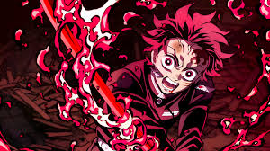

About Tanjiro
Tanjiro is a demon slayer! He's an anime character that is working to turn his demon sister back into a human.
Tanjiro - demon slaying mode
Tanjiros Characteristics
- He's got big eyes
- He's OP
- He's tring to save the world
Tanjiro's Friends
Tanjiro has some awsome friends! I think his best friend is zenitsu. He's awsome. Click on the links below to read more about them.